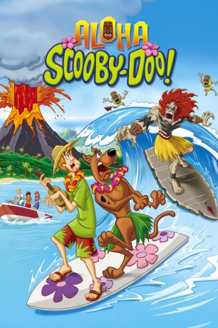

#2468 Aloha, Scooby-Doo!
 
 IMDB-Wertung: 6.5 / 10
IMDB-Wertung: 6.5 / 10  Metascore: 0
Metascore: 0 
Scooby, Shaggy & Co. sind auf Hawaii, wo sich die besten Surfer der Insel auf den bevorstehenden Wettkampf vorbereiten. Da taucht plötzlich ein böser Geist, der Wikki-Tikki, auf und kidnappt die Freundin des Lokalmatadors. Auch sein Gefolge kleiner, bissiger Gesellen verbreitet Angst und Schrecken im Dorf. Ein klarer Fall für die Mystery-Gang, die sich ganz offensichtlich im Wasser genauso wohl fühlt, wie zu Lande oder in der Luft. Auf geht’s, zur Jagd nach dem Dschungel-Dämon!
Jahr: 2005
Dauer: 70 Minuten
FSK:
Land: USA Studio: Warner Home VideoTonspuren: DD5.1 - ,
Untertitel:
Auflösung: 1080p (1920x1080) Größe: 6389 MB
Genre: Animation/Trick, Komödie, Mystery
Regisseur: Tim Maltby
Drehbuch: Temple Mathews
Soundtrack: Thomas Chase
Darsteller:
 Frank Welker als Scooby-Doo / Fred / Wiki-Tiki
Frank Welker als Scooby-Doo / Fred / Wiki-Tiki Casey Kasem als Shaggy
Casey Kasem als Shaggy Mindy Cohn als Velma
Mindy Cohn als Velma Grey Griffin als Daphne Blake / Auntie Mahina / Local Woman #2
Grey Griffin als Daphne Blake / Auntie Mahina / Local Woman #2 Tia Carrere als Snookie / Local Woman #1
Tia Carrere als Snookie / Local Woman #1 Teri Garr als Mayor Molly Quinn
Teri Garr als Mayor Molly Quinn Mario Lopez als Manu Tuiama / Mainland Surfer
Mario Lopez als Manu Tuiama / Mainland Surfer Adam West als Jared Moon
Adam West als Jared Moon- Don Ho als Special Musical Guest
 Dee Bradley Baker als Tiny Tiki / Surfer on Bike / California Surfer Dude / Local Guy #1 / Wild Pig / Gecko / Flame Thrower
Dee Bradley Baker als Tiny Tiki / Surfer on Bike / California Surfer Dude / Local Guy #1 / Wild Pig / Gecko / Flame Thrower Tom Kenny als Ruben Laluna / California Surfer / Tiny Tiki
Tom Kenny als Ruben Laluna / California Surfer / Tiny Tiki- Ray Bumatai als Little Jim
- Dick Dale als Special Musical Guest
Datei: X:\Kinder Collections\Scooby-Doo\Aloha, Scooby-Doo! (2005, FSK, 1920x1080).mkv seit 12.11.2015
Festplatte: Kinder-Filme+Trick
 Es gibt insgesamt 17 Filme in der Gruppe 'Kinder Collections\Scooby-Doo'
Es gibt insgesamt 17 Filme in der Gruppe 'Kinder Collections\Scooby-Doo'